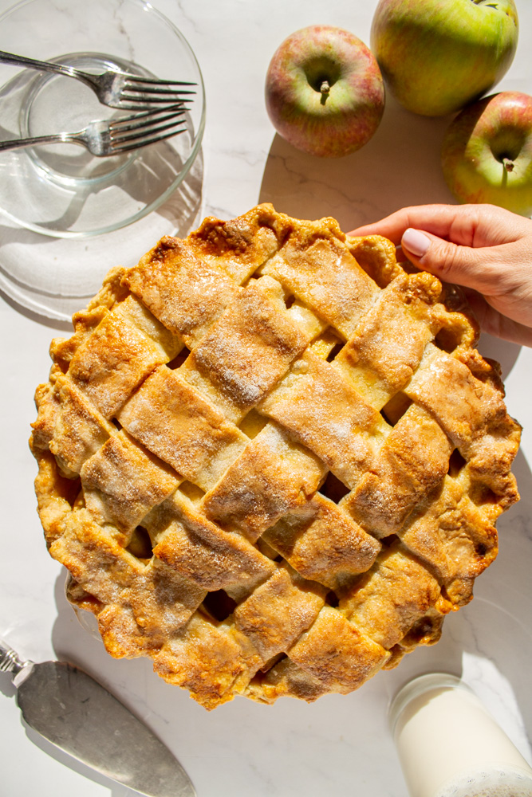

Ingredients
- 2 cups all-purpose flour
- 1/2 cup unsalted butter
- 6-8 fresh apples, peeled and sliced
- 3/4 cup sugar
- 1 tsp cinnamon
- 1/4 tsp nutmeg
- 1 tbsp lemon juice
- 1 egg (for egg wash)
Instructions
- Preheat oven to 375°F (190°C).
- Prepare the pie crust by mixing flour and butter until crumbly.
- Roll out the dough and place it in a pie dish.
- Mix apples, sugar, cinnamon, nutmeg, and lemon juice in a bowl.
- Pour the apple mixture into the crust.
- Cover with the second layer of crust and crimp the edges.
- Brush with egg wash and cut slits in the top for venting.
- Bake for 45-50 minutes until golden brown.
- Let cool before serving.